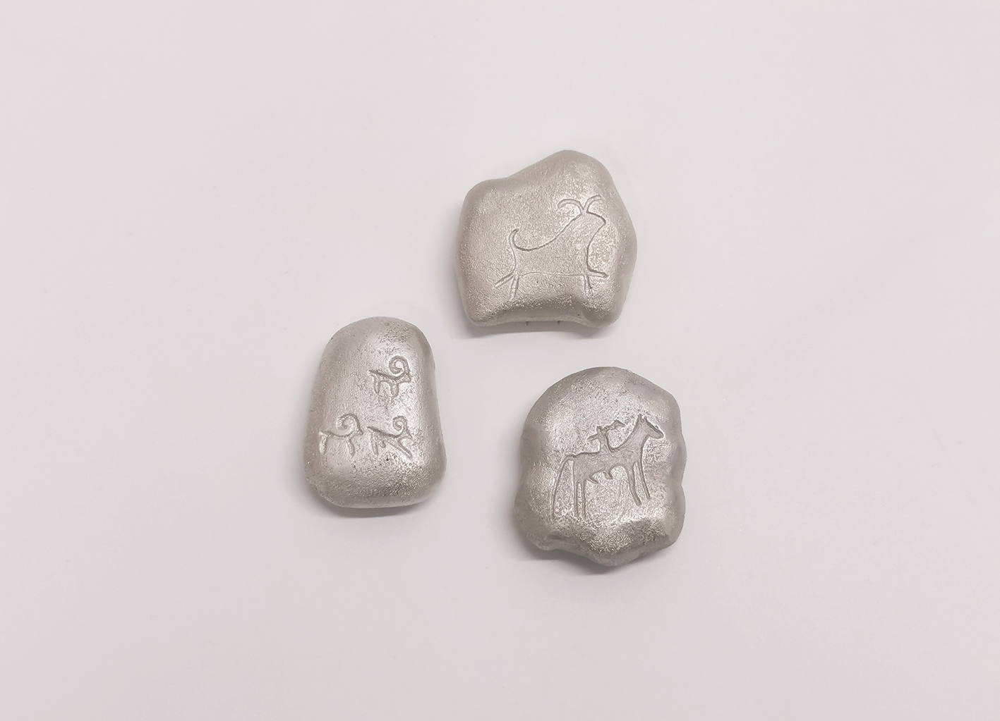

Stones form the Grassland, 2023

Zihan Zhou
Stones form the Grassland, 2023
Brooches
Dimensions (from left to right): 45.9 * 34.1 * 20.1 mm; 43.6 * 43.9 * 20.4 mm; 47.1 * 40.2 * 20.8 mm.
Material: silver, stainless steel wire.
Stones form the Grassland is a series of brooches that represent work in progress inspired by prehistoric animal petroglyphs in Yinshan Rock Art, Inner Mongolia, China. This work is part of my ongoing PhD project titled: Jewellery of Nomadism: Contemporary Jewellery Practice Based on the Study of Animal Motifs in Inner Mongolian Nomadic Culture (tentative name).
Today, the nomadic lifestyle and traditions in Inner Mongolia are languishing; however, their arts and culture are unique and inspiring. Jewellery, of all the arts and crafts, had a pre-eminent status in Inner Mongolian society not just as an ornament but as a wearable symbol of wealth and status embodying a unique culture and nomadic memories. Based on a systematic study of the core aesthetic of Inner Mongolian nomadic visual culture, this practice-based research work investigates traditional animal iconography from Inner Mongolian art and its recuperation into contemporary jewellery.
Rock Art situated in the Yinshan Mountains in Inner Mongolia is mostly dated between the Neolithic and the Bronze Age. The animal motifs carved on the rocks have become a key inspiration for my practice, designing and making brooches in this project. The "pebble" shape of my brooches responds to my carved lithic inspiration and to the visual aesthetic of the "oboo", which is a mound of stones used as a landmark and an important ritual site for the Inner Mongolian nomadic people. The brooches, then, are a cultural heritage bridge between contemporary jewellery, Inner Mongolian rock art, and the value and aesthetic systems of the nomad heritage.